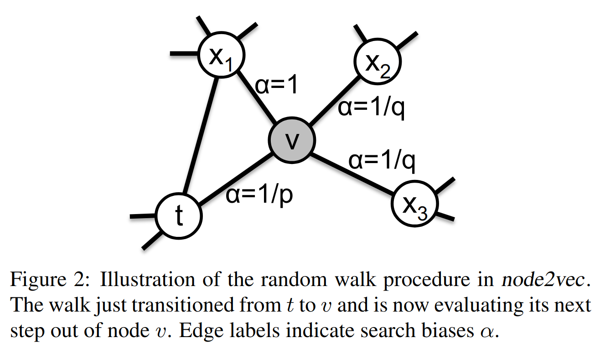
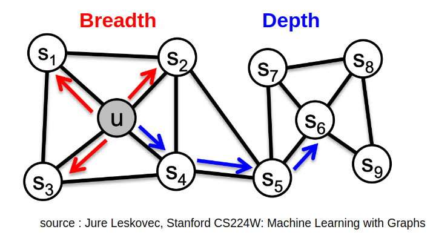

class: center, middle, title-slide count: false # Deep Learning on Graphs <br/><br/> .bold[Marc Lelarge] .bold[[www.dataflowr.com](https://www.dataflowr.com)] --- # (1) Node embedding ## Inspired from language model (NLP) ### one fixed graph, no signal. Ex: community detection # (2) Signal processing on graphs ## Fourier analysis on graphs ### one fixed graph, various signals. Ex: classification of signals # (3) Graph embedding ## Graph Neural Networks ### various graphs. Ex: classification of graphs --- # (1) Node embedding ## Inspired from language model (NLP) ### one fixed graph, no signal. Ex: community detection # .gray[(2) Signal processing on graphs] ## .gray[Fourier analysis on graphs] ### .gray[one fixed graph, various signals. Ex: classification of signals] # .gray[(3) Graph embedding] ## .gray[Graph Neural Networks] ### .gray[various graphs. Ex: classification of graphs] --- # Node embedding ## Inspired from language model (NLP) ### one fixed graph, no signal. Ex: community detection .center.width-30[] - [DeepWalk](https://arxiv.org/abs/1403.6652) - hierarchical softmax - [node2vec](https://snap.stanford.edu/node2vec/) - negative sampling --- # Node embedding .center.width-35[] -- count: false .center.width-35[] -- count: false .center.width-35[] --- count: false # DeepWalk: using a language model for node embedding - Goal of a language model: to estimate the likelihood of a specific sequence of words appearing in a corpus. - How: learn an embedding of each word in order to predict its probability of appearance in a given context. -- count: false - Building a corpus from a graph: a word = a node and a sentence = a random walk on the graph .center.width-50[] - Use the NLP algorithm [Word2vec](https://dataflowr.github.io/website/modules/8c-word2vec/) to learn node embedding <!-- - Assign the contexts to the leaves of a binary tree and use the parametrization: $$ p(c\|w; \theta) = \prod\_{b\in \pi(c)} \sigma(h\_b \cdot u\_w), $$ where $\pi(c)$ is the path from the root to the leaf $c$ and $\sigma$ is the sigmoid function: $$ \sigma(x) = \frac{1}{1+e^{-x}}. $$ --> .citation.tiny[ (Perozzi, Al-Rfou, Skiena [DeepWalk: Online Learning of Social Representations](https://arxiv.org/abs/1403.6652), 2014] --- # node2vec - parameterization of the skip-gram model approximated thanks to negative sampling - notion of context obtained thanks to biased random walks.  .citation.tiny[ Grover, Leskovec [node2vec: Scalable Feature Learning for Networks](https://snap.stanford.edu/node2vec/), 2016] --- # Playing with the graph exploration .center.width-40[] --- # .gray[(1) Node embedding] ## .gray[Inspired from language model (NLP)] ### .gray[one fixed graph, no signal. Ex: community detection] # (2) Signal processing on graphs ## Fourier analysis on graphs ### one fixed graph, various signals. Ex: classification of signals # .gray[(3) Graph embedding] ## .gray[Graph Neural Networks] ### .gray[various graphs. Ex: classification of graphs] --- # Signal processing on graphs ## Fourier analysis on graphs ### one fixed graph, various signals. Ex: classification of signals .center.width-60[] ## Problem: how to implement a low-pass filter on a graph? We first need to define a notion of frequency domain for graphs. This will allow us to define convolutions on graphs. --- # Filtering in computer vision ##convolution = product in spectral domain .center.width-60[] .citation[slide by Andrew Zisserman] --- # Spectral graph theory For a graph $G=(V,E)$, we denote by $A$ its adjacency matrix and we define its Laplacian by $L=D-A$ where $D = \text{diag}(A 1)$ is the diagonal matrix of (weighted) degrees. -- count: false ## Analogy with $\Delta f = \sum\_{i=1}^d\frac{\partial^2 f}{\partial x\_i^2}$ Recall that $f''(x) \approx \frac{\frac{f(x+h)-f(x)}{h}-\frac{f(x)-f(x-h)}{h}}{h}=\frac{f(x+h)-f(x)+f(x-h)-f(x)}{h^2}$ If $f:V\to \mathbb{R}$, then $$ L f (v) = \sum_{w\sim v} (f(v)-f(w)) $$ The Fourier transform allows us to write an arbitrary function as a superposition of eigenfunctions of the Laplacian. This approach works for general graphs! .center.width-20[] --- .center.width-50[] .center[Nodal domain for $\lambda\_2$] --- .center.width-50[] .center[Nodal domain for $\lambda\_3$] --- .center.width-50[] .center[Nodal domain for $\lambda\_4$] --- .center.width-50[] .center[Nodal domain for $\lambda\_6$] --- .center.width-50[] .center[Nodal domain for $\lambda\_{10}$] --- # Convolutional neural networks on graphs ### Performances on MNIST .center.width-60[] Underlying graph: 8-NN graph of the 2D grid of size $28\times 28$ with weight $W\_{i,j} = e^{-\||z\_i-z\_j\||^2/\sigma^2}$, where $z\_i$ is the 2D coordinate of pixel $i$. .center.width-60[] .citation.tiny[ Defferrard, Bresson, Vandergheynst [CNN on graphs with fast localized spectral filtering](https://arxiv.org/abs/1606.09375), 2016] --- # .gray[(1) Node embedding] ## .gray[Inspired from language model (NLP)] ### .gray[one fixed graph, no signal. Ex: community detection] # .gray[(2) Signal processing on graphs] ## .gray[Fourier analysis on graphs] ### .gray[one fixed graph, various signals. Ex: classification of signals] # (3) Graph embedding ## Graph Neural Networks ### various graphs. Ex: classification of graphs --- # Graph embedding ## Graph Neural Networks ### various graphs. Ex: classification of graphs .center.width-40[] --- # How to represent a graph? .center.width-30[] -- count: false Result of seeing an image where nodes are pixels and where we replace the grid by the complete graph: .center.width-60[] -- count: false We only consider algorithms whose result does not depend on the particular representation of the graph. <!-- In graph theory, graph canonization is the problem of finding a canonical form of a given graph $G$ (i.e. every graph that is isomorphic to $G$ should have the same canonical form as $G$). Thus, from a solution to the graph canonization problem, one could also solve the problem of graph isomorphism... --> --- # Message passing GNN (MGNN) Grid vs graph: .center.width-30[] -- count: false .center.width-60[] .citation[image from Thomas Kipf] --- count: false # Message passing GNN (MGNN) Grid vs graph: .center.width-30[] .red[MGNN] takes as input a discrete graph $G=(V,E)$ with $n$ nodes and features on the nodes $h^0\in \mathbb{F}^n$ and are defined inductively as: $h^\ell\_i \in \mathbb{F}$ being the features at layer $\ell$ associated with node $i$, then $$ h^{\ell+1}\_i = f\left( h\_i^\ell, \left[h\_j^\ell\right]\_{j\sim i}\right), $$ where $f$ is a learnable function and $[\cdot]$ represents the multiset. .center.width-40[] --- # The many flavors of MGNN The message passing layer can be expressed as (i.e. for each $f$ there exist $f\_0$ and $f\_1$ such that): $$ h^{\ell+1}\_i = f\left( h\_i^\ell, \left[h\_j^\ell\right]\_{j\sim i}\right)= f\_0\left(h\_i^\ell, \sum\_{j\sim i}f\_1\left( h^\ell\_i, h\_j^\ell\right)\right). $$ By varying the functions $f\_0$ and $f\_1$, you get: [vanilla GCN](https://arxiv.org/abs/1609.02907), [GraphSage](https://arxiv.org/abs/1706.02216), [Graph Attention Network](https://arxiv.org/abs/1710.10903), [MoNet](https://openaccess.thecvf.com/content_cvpr_2017/html/Monti_Geometric_Deep_Learning_CVPR_2017_paper.html), [Gated Graph ConvNet](https://arxiv.org/abs/1711.07553), [Graph Isomorphism Networks](https://arxiv.org/abs/1810.00826)... <center>GCN:</center> .center.width-30[] <center>GraphSage:</center> .center.width-30[] <center>GIN:</center> .center.width-30[] --- # Results with GIN .center.width-80[] Guess from which paper these results are taken from? .center.width-10[] --- # Expressive power of GNN Motivation for invariant/equivariant algorithms : by restricting the class of functions we are learning, we lower the complexity of the model and improve its robustness and generalization. To learn a function that is known to be invariant to some symmetries, we use layers that respect this symmetry. Can such a network approximate an arbitrary continuous invariant function ? ### Ex: a problematic pair .center.width-30[] -- count: false MGNNs are unable to distinguish $d$-regular graphs. By increasing the complexity of the GNN architectures, it is possible to build more expressive GNNs: [Provably Powerful Graph Networks](https://arxiv.org/abs/1905.11136), [Expressive Power of Invariant and Equivariant Graph Neural Networks](https://arxiv.org/abs/2006.15646) --- # Thank you ! For more details: - [Node embedding](https://dataflowr.github.io/website/modules/graph1/) - [Signal processing on graphs](https://dataflowr.github.io/website/modules/graph2/) - [Graph embedding](https://dataflowr.github.io/website/modules/graph3/) - [Inductive bias in GCN: a spectral perspective](https://dataflowr.github.io/website/modules/extras/GCN_inductivebias_spectral/#inductive_bias_in_gcn_a_spectral_perspective) - [Invariant and equivariant layers with applications to GNN, PointNet and Transformers](https://dataflowr.github.io/website/modules/extras/invariant_equivariant/) - [Exploiting Graph Invariants in Deep Learning](https://dataflowr.github.io/website/modules/extras/graph_invariant/) .center.bold[[www.dataflowr.com](https://www.dataflowr.com)]